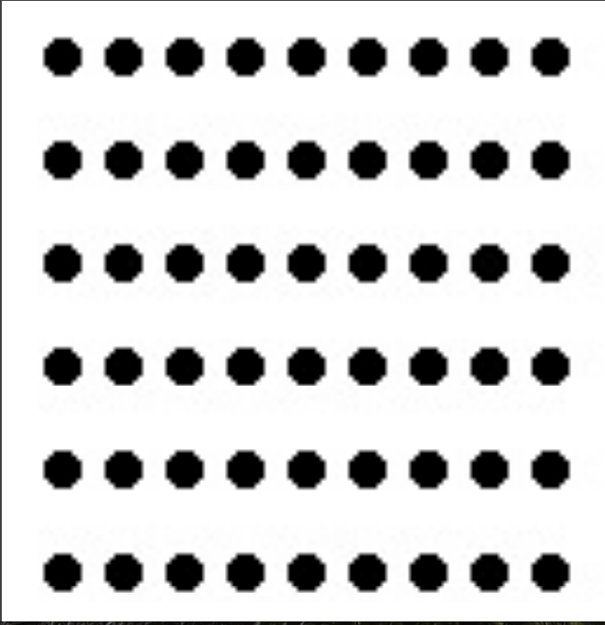

Graphical Perception (1/2)
Outline
- Assignment 2 review
- Role of graphical perception
- Sensory versus arbitrary representation
- Model of perceptual processing
- Preattentive processing
- Gestalt groupings
Assignment 2 review
- What is the user centered design process?
- Why write personas?
- Why write scenarios?
Requirements
- Identify a dataset
- Write a persona description
- Write a scenario
World Food Programme
“Pranab is a 35-year-old food aid worker who works with an advocacy organization that solicits donations for food contributions for emergency relief.”
Refugee Dataset
VisualizationRole of graphical perception
Visualization process

Graphical perception
“The visual decoding of information encoded in graphs” - Cleveland/McGill
- Our task: encode data with graphical properties that are most easily/accurately decoded
- Semiotics of graphics
“The study of symbols and how they convey meaning” - Ware 2004
Is this possible?
- Can there be a science of visualization?
- Arbitrariness (Saussure)
- Cultural relativism
- Ware 2004
Sensory versus arbitrary symbols
Definitions
- Sensory: meaning derived without learning
- Arbitrary: understanding depends on learned information
Sensory symbols
- Understanding without training
- Resistance to instructional bias
- Sensory immediacy
- Cross-cultural validity
Understanding without training
Resistance to instructional bias

Arbitrary symbols
- Hard to learn
- Easy to forget
- Embedded in culture and applications
- Formally powerful
- Capable of change
Sensory versus arbitrary

Model of perceptual processing
Three stages
- Stage 1: Parallel processing of low level information
- Stage 2: Pattern perception
- Stage 3: Goal directed processing
Stage 1
- Neurons process information in parallel
- Extract features (color, texture, movement, orientation)
Stage 2
- Slower serial processing
- More detailed processes such as segmentation
Stage 3
- Executing advanced visual queries
- Requires active attention

Aim to communicate your primary message through stage 1 or stage 2 processing
Preattentive cognition
Preattentive cognition
- Processing prior to conscious attention
- Stage 1 processing of sensory symbols
- Resistant to distractors
- Rooted in sensory symbols
Resistant to distractors
Importance
- Dictates ease of use
- Determines hierarchy of interpretation
- Distinguishing categories from one another
- Drawing attention to a single element
Preattentive attributes

Are all preattetive attribues equally effective?

Rapid processing time
Using color
Drawing attention
Semantic depth of field

Gestalt grouping
Overview
- Tendency to visually group elements
- Distinguishing sets from one another
- Pattern perception
- Eight laws (Ware 2004)
Gestalt laws
- Proximity
- Similarity
- Connectedness
- Continuity
- Symmetry
- Closure
- Relative size
- Common fate
Acknowledgement: Jeffery Heer
Proximity
Proximity

Similarity
Connectedness
Closure
Summary
- Role of graphical perception
- Sensory versus arbitrary representation
- Model of perceptual processing
- Preattentive processing
- Gestalt groupings
Assignment 3 (conceptual)
- Identify a global health dataset of interest
- Sketch 5 representations of the dataset
- Include short descriptions of how you encoded data attributes
- Due Friday before class
- Can be final project data
- More details here